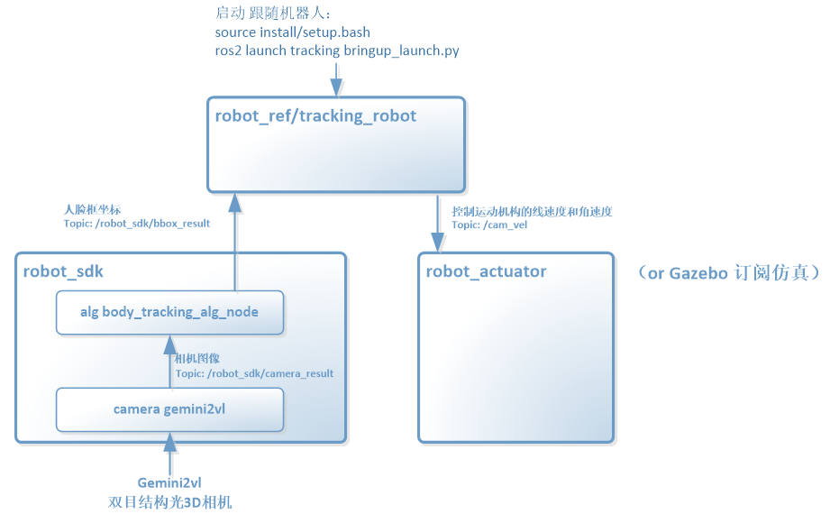

1. Tracking robot 跟随机器人
1.1. 功能说明：
通过视觉进行人脸目标检测与跟踪，并生成运动控制指令控制机器人自动跟随目标运动。该功能支持机器人实物和Gazebo仿真两种体验方式。
1.2. 机器人实物：
| 设备名称 | 生产厂家 | 作用 | 参考链接 |
|---|---|---|---|
| Orbbec Gemini2vl相机 | 奥比中光 | 3D结构光深度视觉相机，点云数据输入源 | https://item.jd.com/10085187988079.html |
1.3. 应用说明：
运行本应用示例，可以通过摄像头识别到人脸，从而控制小车运动轨迹，通过foxglove可以查看摄像头识别人脸框的情况，通过gazebo可以模拟演示人脸移动控制小车运动情况
原理框图

1.3.1. 功能包安装
1、安装gazebo
2、安装foxglove
或直接采用奥比附带提供的docker环境
1.3.2. 编译
在kit目录下全编译 colcon build （包含ref、sdk包）
1.3.3. 运行
1、确保设备连接上gemini摄像头
2、source install/setup.bash (若设备执行器是zsh，则使用source install/setup.zsh)
3、ros2 launch tracking bringup_launch.py
此时launch启动应用，并自动打开gazebo，加载两轮差速小车模型（设备需要安装好gazebo和小车模型）
控制方法：识别到人脸，根据人脸的移动方向控制机器人底盘做前进后退转弯运动（在gazebo画面中仿真）：
人脸向上移动—–小车前进
人脸向下移动—–小车后退
人脸向左移动—–小车左转弯
人脸向右移动—–小车右转弯
原理，tracking实现判断人脸移动方向趋势，通过发布发布话题/cmd_vel，以控制底盘移动
1.3.4. 仿真
通过foxglove可以查看摄像头识别人脸框的情况，通过gazebo可以模拟演示人脸移动控制小车运动情况
1.4. 详细代码开发说明：
参考章节：
人体人脸跟随应用示例app说明：robot_ref/tracking_robot
人体人脸识别算法说明：alg/body_tracking_alg
Gemini2vl摄像头sdk说明：sensor/camera/src/gemini2vl
1.5. 常见问题：
1、人脸识别跟随，使用gazebo仿真和真实机器人仿真存在差异，区别是真实机器人摄像头可以跟随着人脸转动对焦中心坐标
2、通过foxglove可以查看摄像头识别人脸框的情况，通过gazebo可以模拟演示人脸移动控制小车运动情况。
3、若重新打开camera遇到异常，为上一次异常退出导致，这时尝试拔下camera usb重新上电重启